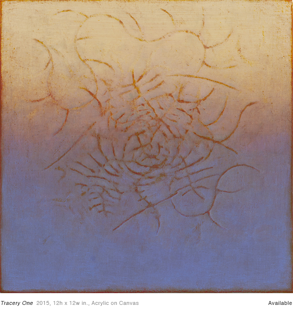

Tracery One
Tracery One is one of Susan Parker's most intricate pieces
>
Tracery One
Susan says:
In these paintings I build and cultivate networks of interlaced, branch-like lines. I want the energy of the composition to predominate.
>
Tracery One
Some have said that Susan's Tracery series are based on her sailing adventures, where the lines resemble overlapping ropes and the direction of the winds
>